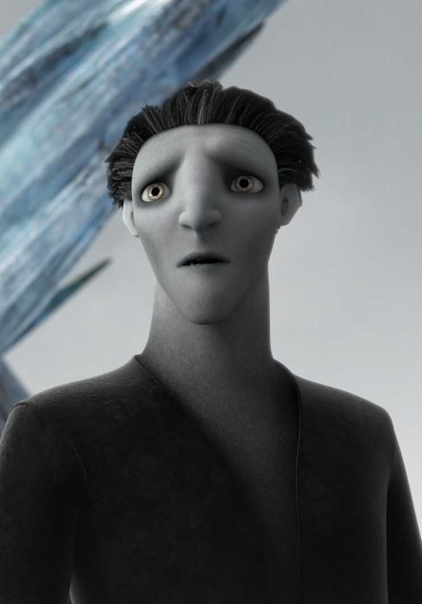

Полнометражный анимационный фильм по мотивам серии книг Уильяма Джойса режиссёра Питера Рэмси, вышедший в кинотеатрах 21 ноября 2012 года. Герои детства – Санта-Клаус, Зубная фея, Пасхальный кролик и Песочный человек объединились в команду Хранителей снов, защищая мечты и надежды детей. Когда злой дух Кромешник захотел заменить детские мечты своими кошмарами, он попытался убедить малышей в том, что Хранителей не существует. На помощь им приходит дух зимы – Ледяной Джек.
Персонажи
Ледяной Джек Главный герой фильма. Дух зимы. Ледяной Джек — подросток, который не имеет никакого интереса к тому, чтобы быть вязанным по правилам или обязанностям и просто хочет использовать свой посох, чтобы распространить его зимнее волшебство ради личного развлечения. На протяжении большей части фильма был незаметен для людей. Позже узнаёт о том, что когда-то был смертным человеком, который, спасая сестру, утонул в ледяном озере и был возрождён как зимний дух. К концу фильма становится Хранителем Веселья. Ледяной Джек - не выдуманный персонаж. Прообразом был персонаж скандинавских легенд, который был, как правило, стариком, но мог принимать и другие обличья: мальчик, юноша, мужчина, дед. И именно он отвечал за ледяные узоры.
Ник Северянин (Санта-Клаус) Лидер Хранителей снов и Хранитель Чудес. Он живёт на Северном полюсе, в Замке Льда, и обслуживается местными жителями — йети, которые построили замок и мастерскую. В оригинальной озвучке у Северянина сильный русский акцент, к тому же ряд особенностей как бы указывают на русскую принадлежность героя, например, вместо классического костюма Санты — чёрная папаха с русской шубой, а также личная коллекция матрёшек. Северянин отличается неудержимым характером, и его порывистость порой просто не знает границ, а когда герой верит в то, что делает, для него не существует никаких препятствий.
Пасхальный кролик Легендарный хранитель, вестник яиц Пасхи и Хранитель Надежды. Родом из Австралии, говорит с австралийским акцентом. После того, как почти все дети перестали в него верить, он превратился в маленького кролика. Активный и энергичный герой, который идеально научился владеть своими магическими бумерангами и может смести все, что окажется на его пути. Он благоразумен и невозмутим, но только до того момента, когда Северянин снова не скажет, что Рождество важнее Пасхи.
Песочник (Песочный человек) Хранитель Снов. Является первым Хранителем, выбранным Луноликим, и самым первым из Хранителей (в честь его должности и назван Орден Хранителей снов). Он не говорит, а общается с помощью изображений из песка, которые он показывает выше головы или жестов. Общение с ним сильно напоминает игру в шарады, поскольку он, кроме как песочных шуршаний, никаких звуков издать не может. При помощи золотого песка создаёт хорошие сны. Имеет личные счёты с Кромешником. Был им же убит, но после воскрес благодаря вере друзей Джейми.
Зубная фея Мифическая коллекционерка зубов и Хранительница Воспоминаний. Она выглядит как наполовину человек, наполовину колибри. Благодаря своим помощницам-феям она собирает детские зубы, которые поддерживают самые драгоценные детские воспоминания. Зубная фея хранит их в своём дворце и возвращает воспоминания их обладателям, когда они необходимы больше всего.

Кромешник (Бугимен) Главный антагонист фильма, сущность страха и Король Кошмаров. Многие столетия назад вгонял людей в ужас и страх, но после появления Хранителей стал слабым и безызвестным. Злодей, который каждую ночь приходит к спящим, чтобы запугать их с помощью своей армии кошмаров. Именно из-за него многие так боятся темноты, но герою этого мало. Он решает уничтожить веру детей в Хранителей Снов, заменив ее на страх. При помощи страха смог превратить золотой песок Песочного человека в чёрный и создал из него армию кошмаров.
Джейми Последний ребёнок, который не разочаровался в Хранителях, а, несмотря ни на что, верил в сказки. Стал первым ребёнком, увидевшим Ледяного Джека.